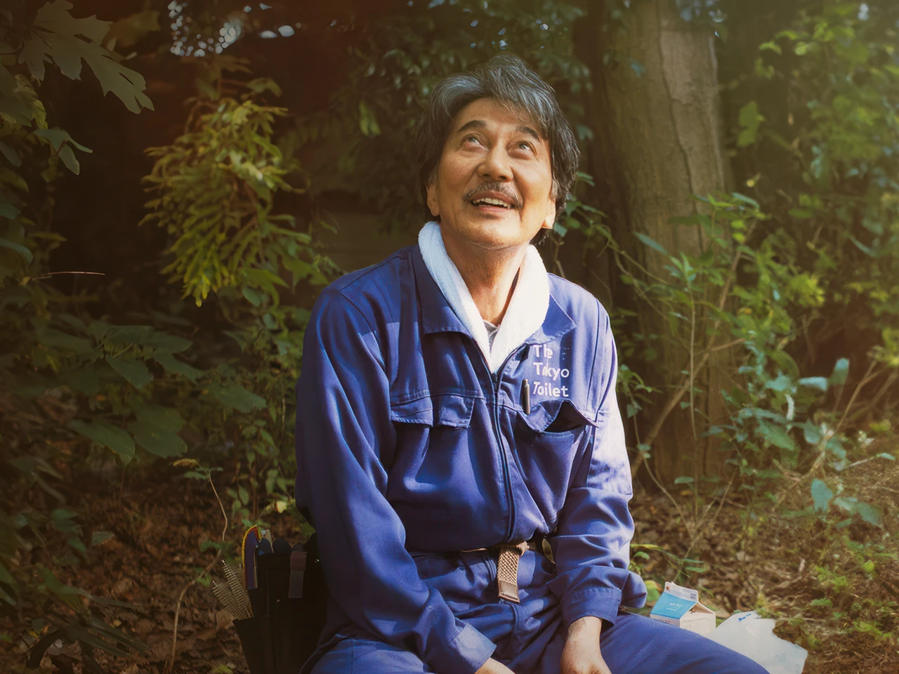

Sobre mí

Desarrolladora fullstack con algunos años de experiencia en el
sector educativo.
Me interesa escribir código claro y legible, que sea fácil de
mantener, escalar y transmitir.
Me parece fundamental para trabajar en equipo y de manera
colaborativa.
Sigo creciendo en este ámbito. Mi misión es crear soluciones
tecnológicas que transformen la educación, creo que la tecnología
tiene mucho para aportar a la educación.
Habilidades Blandas

Trabajo Colaborativo
Experiencia en trabajo en equipo, adaptándome a diferentes dinámicas grupales y aportando valor en proyectos multidisciplinarios.

Comunicación Efectiva
Habilidad para transmitir ideas de manera clara y concisa, adaptando el mensaje según la audiencia y facilitando la comprensión mutua.

Resolución de Problemas
Capacidad analítica para identificar desafíos, evaluar alternativas y proponer soluciones innovadoras y efectivas.
Habilidades Técnicas
Tecnologías que domino
- TypeScript
- React
- NestJS
- SQL / NoSQL
- GraphQL
Tecnologías a aprender
- Docker
- Kubernetes
- Terraform
- AWS
Películas Favoritas
Tracks
Una historia sobre perseverancia y autodescubrimiento en el desierto australiano. El viaje de la protagonista es un testimonio de espíritu humano y conexión con la naturaleza.

Perfect Days
Una obra de Wim Wenders que hace énfasis en la belleza de la sencillez de la vida cotidiana. La cinematografía cautiva acompañado de un mensaje profundamente humanista.

Lost in Translation
Una obra de Sofia Coppola que explora la soledad y la conexión humana en Tokio. Una película contemplativa que captura la incomunicación y los momentos de verdadera comprensión entre dos extraños.